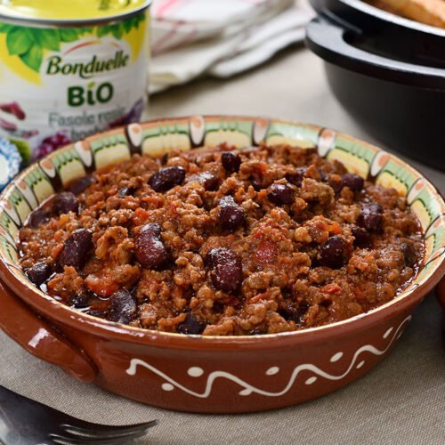

Chili con Carne

Description
Great chili recipe for a very large crowd. Cook it in a 6 gallon steam jacketed kettle or a huge pot on the stove.
List of ingredients:
- 6 pounds dried pinto beans
- ⅜ cup salt
- 20 pounds lean ground beef
- 1 clove garlic, minced
How to prepare:
- Wash and sort pinto beans. Bring 3 gallons of water to boil in a 6 gallon pot. Pour in beans, return to a boil and cook 2 minutes. Remove from heat and let stand 1 hour. Stir in salt and simmer until tender, 90 minutes. Drain and set aside.
- Brown beef with onions and garlic over medium high heat in same pot or enormous skillet. Combine meat mixture, tomatoes, tomato paste, chili powder, cumin, pepper and cooked beans in 6 gallon pot; stir; cover and simmer 1 hour.